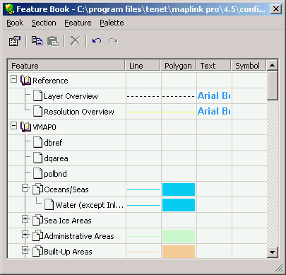
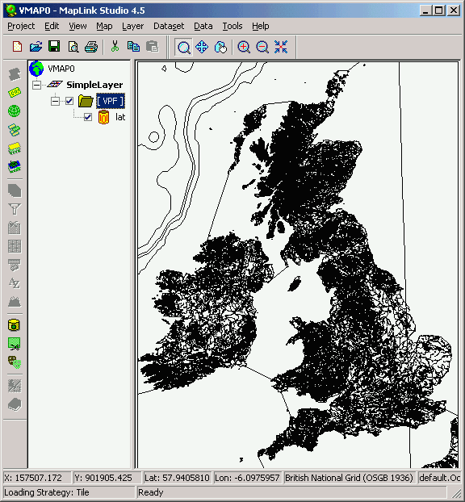
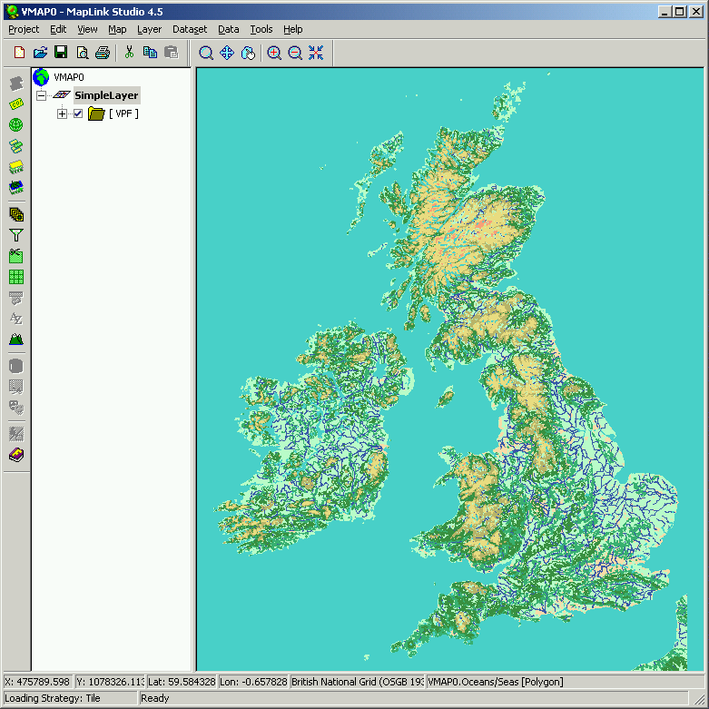

How Does the Feature Book Work?
The Feature Book is a reference book of rendering properties, which define the way map features are visualised.

When map data is read initially it will have minimal rendering and by default will be drawn as simple black lines. By using the Feature Book, the user can quickly and simply affect the appearance and usability of the data with impressive results to meet individual or generic needs.
Default Rendered data:

With a few quick modifications the map can be transformed significantly:

The Feature Book has the following key features:
- Management of feature classes within the Feature Tree.Feature Classes such as Countries in the above example can be edited, moved or deleted in an easy to navigate tree structure.
- Definition of Feature Class rendering properties. Individual Feature Classes can have unique and contrasting rendering attributes, or can have them copied from another and have subtle differences applied.
- Allows the user to build up a set of rendering styles which is transportable across projects.Feature Book Sections can be read into new or existing projects and the Feature Classes held within them used as a basis for complex maps without the repetitive activity of rendering set up.
- Import of Feature Book Sections from other Feature Books.Users can pick, choose and add one or more Sections from previously compiled Feature Books as many times as is necessary.
- Loading and Saving of Feature Book Sections as rendition files.Users can save and load a Feature Book section as rendition files. A rendition file can be loaded into MapLink Pro runtime to change the rendering at runtime.It is also possible to edit feature rendition and save the changes from the MapLink Pro runtime. Loading a rendition file will overwrite any matching features rendition.
- Import of Colour Palettes from palette files or other Feature Books.Industry standard colour palettes are supplied as part of the MapLink Pro installation. The user can also define many unique additions to these palettes.
- Definition of the rendering order of features within single files using feature ordering and multiple render levels.The Feature Book can affect the drawing order of map data items to achieve complex and accurate output with the correct background, middle ground and foreground.